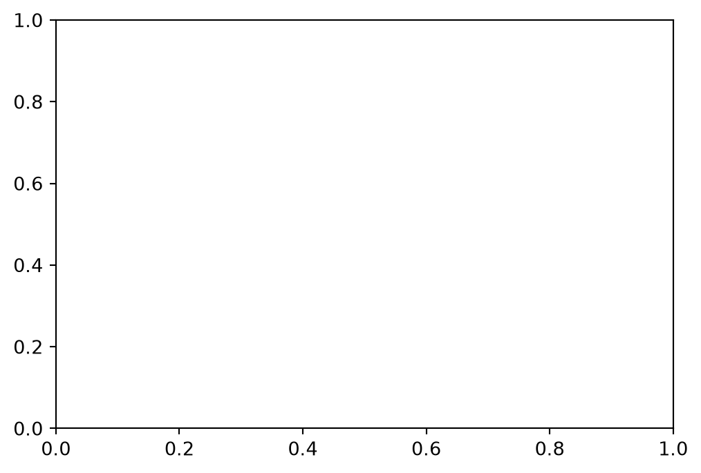
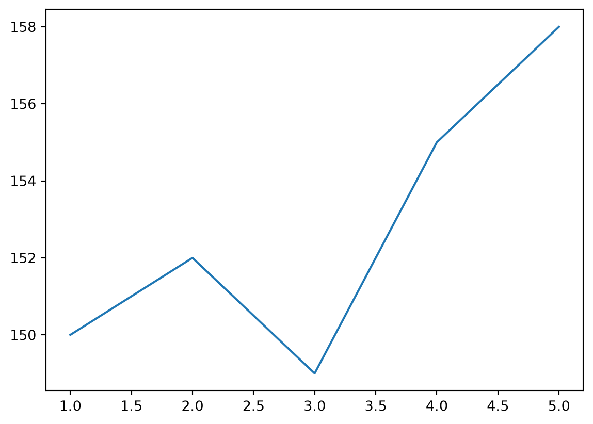
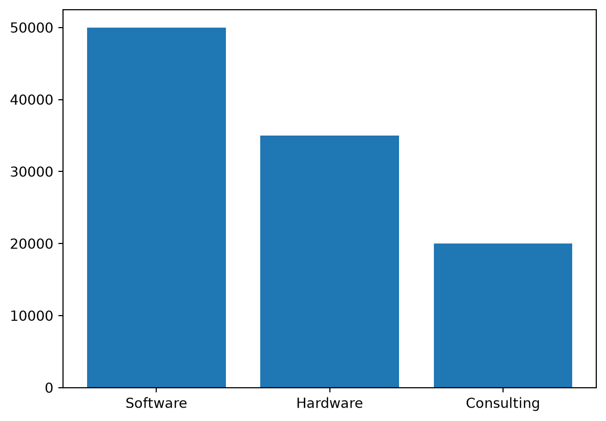
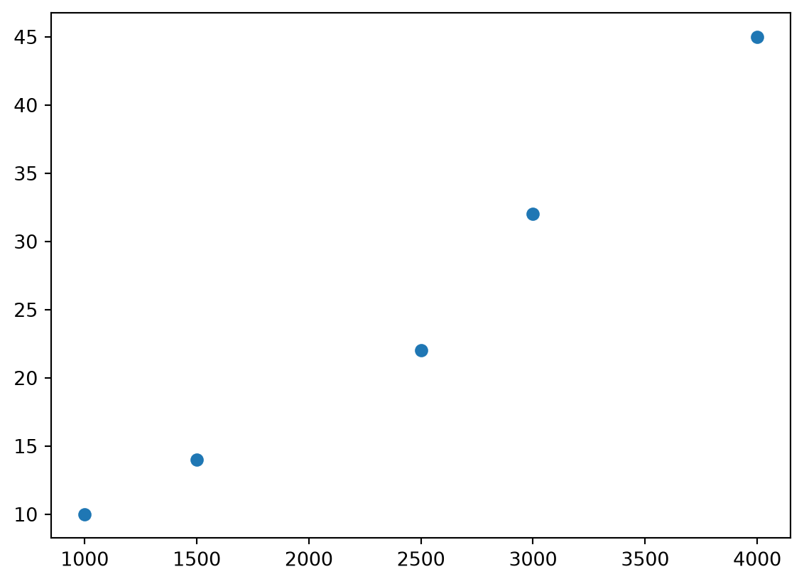
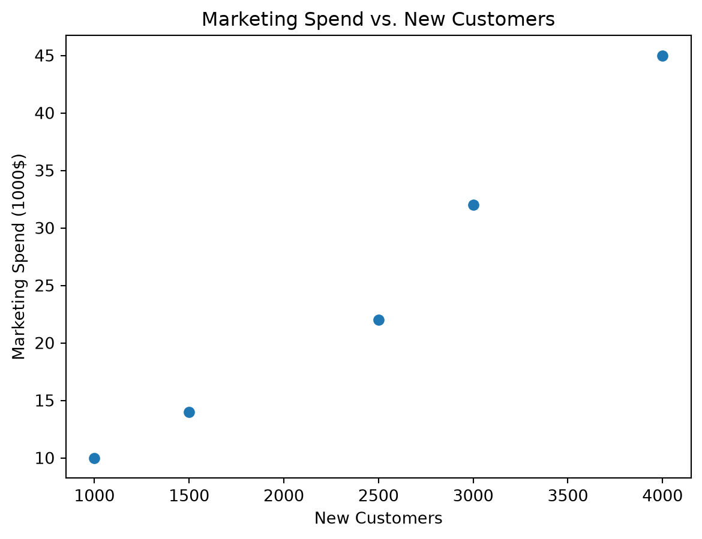
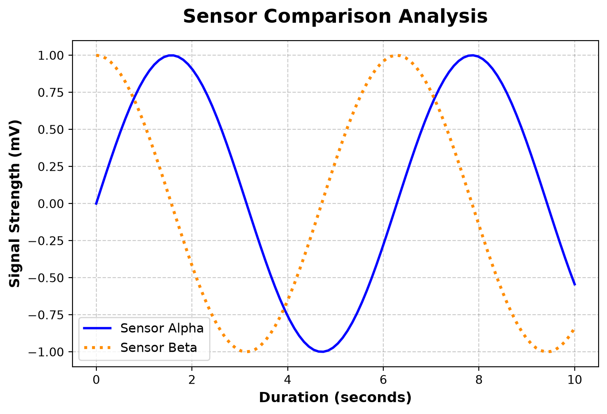

import matplotlib.pyplot as plt6: Basic Plotting
Plotting Data With matplotlib
The matplotlib package is a library for creating two-dimensional charts and graphs. Like NumPy, it is not part of the standard Python library, so you will have to install it separately.
The matplotlib package contains a module named pyplot that you will need to import. Use the following import statement to import the module and create an alias named plt:
Plotting in matplotlib is no different conceptually than using x, y coordinates on graph paper.
If you give matplotlib an array of X data points and an array of X data points, it pairs them up sequentially: (𝑥_0, 𝑦_0 ), (𝑥_1, 𝑦_1 ), … and draws a line between them.
Plotting Data
To plot data, we first need some.
import numpy as np
x = np.array([1, 2, 3, 4, 5])
y = x ** 2Figures and Axes
Before we draw anything, we have to set up our canvas. In Matplotlib, this is done using the Object-Oriented API, which separates the window from the chart itself.
-The Figure (fig): The blank canvas that the plots will be drawn on. It controls global settings like size, background color, and layout. -The Axes (ax): The specific plot inside the figure. This contains the actual x and y axes, tick marks, labels, titles, and the data lines.
Note that there is a substantial number of examples that use the older plt.plot() style, which blends these two concepts together and requires one less line of code. While slightly faster for simple plots, it is much easier to use the figure and axis architecture when you want to customize things.
fig, ax = plt.subplots(figsize=(6, 4))
plt.show()
We can see that we get a completely blank set of axes of 6 inches in width and 4 inches in height.
It is very important to avoid forgetting plt.show(). If you write all your ax.plot() code but forget plt.show() at the very end, Python will just silently finish running and show you nothing.
We now need to actually apply content to the axes to see our plot. We will use use ax.plot(x, y) to create a line plot.
ax.plot(x, y) Type of Plots
Line Plots
A line plot is good for shwoing tends over time, distance, area, etc.
days = np.array([1, 2, 3, 4, 5])
stock_price = np.array([150, 152, 149, 155, 158])
fig, ax = plt.subplots()
ax.plot(days, stock_price) # .plot() defaults to a line
plt.show()
Bar Charts
Bar charts are suited for categorical comparisons.
products = np.array(["Software", "Hardware", "Consulting"])
revenue = np.array([50000, 35000, 20000])
fig, ax = plt.subplots()
ax.bar(products, revenue)
plt.show()
Scatter Plots
Scatter plots are useful for seeing if two variables are correlated.
marketing_spend = np.array([1000, 2500, 1500, 4000, 3000])
new_customers = np.array([10, 22, 14, 45, 32])
fig, ax = plt.subplots()
ax.scatter(marketing_spend, new_customers)
plt.show()
Adding Context and Customization
All of our previous plots are incomplete, as there is no context for what the visuals mean.
- ax.set_title()
- Sets the overall plot title.
- ax.set_xlabel()
- Sets the title for the x-axis.
- ax.set_ylabel()
- Sets the title for the y-axis.
- ax.legend()
- Enables the legend. You need to attach labels to the data form them to be displayed in the legend.
Adding context makes this scatter plot comprehensible.
fig, ax = plt.subplots()
ax.scatter(marketing_spend, new_customers)
ax.set_title("Marketing Spend vs. New Customers")
ax.set_xlabel("New Customers")
ax.set_ylabel("Marketing Spend (1000$)")
plt.show()
Whenever we use methods like ax.set_title()or ax.set_xlabel(), we can pass optional arguments to change how the text looks.
- fontsize : Accepts an integer representing the point size (e.g., 14), or relative text strings like ‘small’, ‘medium’, ‘large’.
- fontweight : Sets the thickness of the font.
- Most common choices are ‘normal’, ‘bold’, or ‘light’.
- color: Changes the text color.
- Matplotlib accepts standard names (‘red’, ‘black’), hexadecimal strings (‘#1e3a8a’), or grayscale floats (‘0.5’).
- fontname : Allows changing the font family (e.g., ‘serif’, ‘sans-serif’).
These arguments go directly inside the plotting call itself (like ax.plot(), ax.scatter()). They change how the visual representation of the data is drawn.
- color : The color of the line, markers, or bars.
- linewidth : The thickness of a line plot (e.g., lw=2.5).
- linestyle : The pattern of the line.
- Common values are:
- ‘-’ (solid line)
- ‘–’ (dashed line)
- ‘:’ (dotted line)
- Common values are:
- alpha: Sets the transparency of the element.
- It ranges from 0.0 (completely invisible) to 1.0 (completely opaque).
- This is very useful when plotting overlapping datasets.
- label: The name string associated with this specific data line.
- This is what Matplotlib reads automatically when you call ax.legend().
There are many more options than what is listed here that can be found in the offical documentation.
This example combines many of these methods to make a plot that is easy to comprehend.
# Generate data
#linspace here creates a vector of 100 data points evenly spaced from 0 to 10 (inclusive).
x = np.linspace(0, 10, 100)
y1 = np.sin(x)
y2 = np.cos(x)
fig, ax = plt.subplots(figsize=(8, 5))
# Apply geometric styling to the data presentation
ax.plot(x, y1, color='blue', linestyle='-', linewidth=2, label='Sensor Alpha')
ax.plot(x, y2, color='darkorange', linestyle=':', linewidth=2.5, label='Sensor Beta')
# Apply text styling
# pad creates whitespace between the title text and the plot grid.
ax.set_title("Sensor Comparison Analysis", fontsize=16, fontweight='bold', pad=15)
ax.set_xlabel("Duration (seconds)", fontsize=12, fontweight='bold')
ax.set_ylabel("Signal Strength (mV)", fontsize=12, fontweight='bold')
#Styling the legend text and grid line structures
ax.legend(fontsize=11, loc='lower left')
ax.grid(True, linestyle='--', alpha=0.4, color='gray')